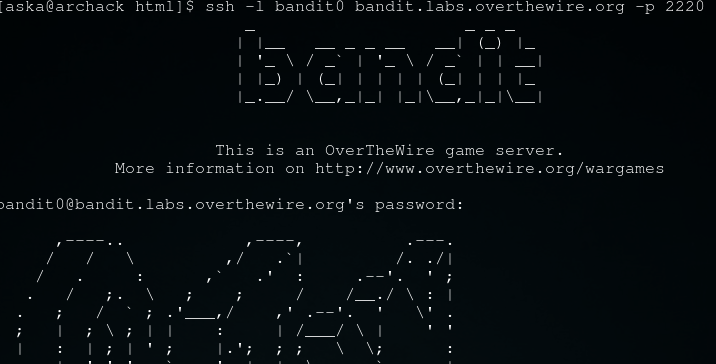
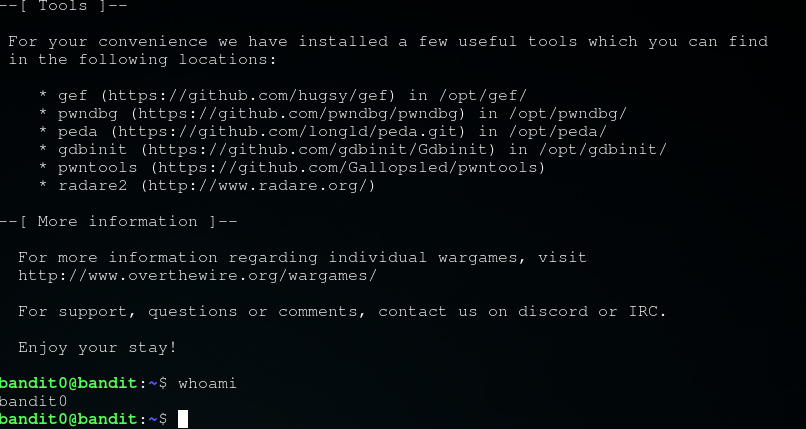

Obiettivo di livello
L'obiettivo di questo livello è che tu acceda al gioco usando SSH. L'host a cui devi connetterti è bandit.labs.overthewire.org, sulla porta 2220. Il nome utente è bandit0 e la password è bandit0. Una volta effettuato l'accesso, vai alla pagina del Livello 1 per scoprire come battere il Livello 1.
Comandi di cui potresti aver bisogno per risolvere questo livello
Materiale di lettura utile
Soluzione livello 0

attraverso il comando ssh -l bandit0 bandit.labs.overthewire.org -p 2220 siamo riusciti a loggarci specificando nomeutente, ip del server e porta a cui connetterci

passwd: NH2SXQwcBdpmTEzi3bvBHMM9H66vVXjL